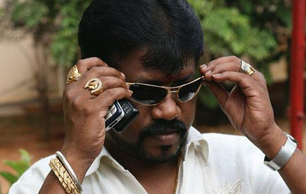

Originally published in Wired.
It’s a little past midnight, and a lonely parcel of farmland not far from the new international airport in Bangalore, India, is soaking up a gentle rain. At the center of the lot is a house surrounded by a low stone wall. There’s a hole in the roof and a bushel of ginger drying under an awning. Large block letters painted on the wall read: THIS PROPERTY BELONGS TO CHHABRIA JANWANI. Inside, eight men—two armed with shotguns—confer in hushed voices as they peer out the windows. Is it safe for them to go to sleep, or should they stand watch another few hours? A guard wearing a dirty work shirt is the first to notice signs of trouble. In the distance, flashlight beams sweep the roadway. The lights advance, accompanied by a chorus of voices. Then the sound of people scrambling over the wall. One of the guards makes a break for the gate, sprinting toward a police station a mile away. Before the others can do much more than scramble to their feet, 20 attackers brandishing swords and knives emerge from the shadows. Some carry buckets of blue paint. It takes them only a minute to overrun the building. Three guards who stood their ground lie bleeding on the floor. The others surrender.
Firmly in control, the marauders shift gears. They pull out rollers and slather paint over Chhabria Janwani’s claim to the land. By the time a police jeep pulls up, the sign is only a memory. The attackers have achieved their goal. Thanks to the convoluted rules surrounding land ownership, the removal of Janwani’s lettering throws his claim into question. The dispute is no longer just a criminal matter of a gang of outlaws taking over a piece of ground; now it’s a civil issue that will have to be mediated in the courts. This kind of legal battle, with its near-endless appeal process, could easily last 15 years. If Janwani hopes to develop or sell the parcel during that time, he’d be better off just letting his assailants have the property in exchange for a fraction of its value.
Bangalore’s Mobster Turned Mogul: Muthappa Rai is an Indian real estate power broker. He used to be a mafia don, wanted for murder by the Indian police. Wired’s Scott Carney talks to the Bangalore land baron.
Bangalore, the fifth-most populous city in India, is the tech outsourcing capital of the world. In the past decade, more than 500 multinational corporations have established office parks, call centers, and luxury hotels here. The arrival of US companies like Adobe, Dell, IBM, Intel, Microsoft, and Yahoo, along with the emergence of homegrown outfits like Infosys and Wipro, has transformed this sleepy outpost into a premier showcase of globalism. Bangalore accounted for more than a third of India’s $34 billion IT export market in 2007. Upscale commercial spaces like UB Tower, modeled after the Empire State Building, and first-rate educational institutions like the Indian Institute of Science set the standard for what India could become.
But there’s a dark side to Bangalore’s rocket ride. City officials—at least those who aren’t taking bribes—struggle to reconcile the gleaming promise of the information economy with the gritty reality of systemic corruption, a Byzantine justice system, and a criminal underworld more than willing to maim and murder its way into control of the city’s real estate market. As tech companies gobble up acreage, demand has pushed prices into the stratosphere. In 2001, office space near the center of town sold for $1 a square foot. Now it can go for $400 a square foot. Janwani bought his 6-acre plot in 1992 for $13,000. Today, even undeveloped, it’s worth $3 million.
A guard carrying a short-barrel shotgun patrols the area around Muthappa Rai’s home.
Photograph: Scott Carney
But high prices are only part of the problem for businesses looking for space in the city. It’s nearly impossible to determine who actually owns any given piece of Bangalorean real estate. Some 85 percent of citizens occupy land illegally, according toSolomon Benjamin, a University of Toronto urban studies professor who specializes in Bangalore’s real estate market. Most land in the city, as in the rest of India, is bound by ancestral ties that go back hundreds of years. Little undisputed documentation exists. Moreover, as families mingle and fracture over generations, ownership becomes diluted along with the bloodline. A buyer who wants to acquire a large parcel may have to negotiate with dozens of owners. Disputes are inevitable.
That’s where Bangalore’s land mafia comes in. With the courts tied up in knots, gangsters offer to secure deeds in days rather than years. “Businesspeople like to do their business, but many times the system does not permit them to do it,” says Gopal Hosur, the city’s joint police commissioner. “Because of escalating land values, unscrupulous elements get involved. They use muscle power to take control of the land.” Some 40 percent of land transactions occur on the black market, according to Arun Kumar, an economist at Jawaharlal Nehru University. Often the local authorities facilitate these deals. A World Bank report rated the Bangalore Development Authority, which oversees urban planning, as one of the most corrupt and inefficient institutions in India.
Lokesh’s nickname, “Malama”, means “medicine”. As in if you have a problem, Lokesh is the medicine. He is a well-known rowdie who settles real estate deals with force.
Photos: Scott Carney
On the ground, violence is meted out by local toughs like “Mulama” Lokesh, whose first name means “medicine”—as in, if you have a problem, Lokesh has the cure. He’s an old-school gangster who happily shows off a bag full of curved swords called longs and cruel Chinese-made knives that he keeps in the trunk of his car. Despite a record of charges that include murder and extortion, even he is wistful for the old days. “The money is so big now that the value of human life has gone down,” he says. “Now people fight with guns.”
Foreign Investment in Bangalore (in millions).
Inspector S. K. Umesh holds a cell phone a few inches from his ear, eavesdropping on a conversation. Since he became a police inspector four and a half years ago, his district’s crime rate has plummeted by 75 percent. He’s killed five of the city’s most wanted criminals and caught more supari killers—contract hit men—than any other officer in Karnataka, the state in which Bangalore is located. Every few seconds, the wiretap emits a soft beep. Wrapping his hand over the receiver, he says, “Without surveillance, we wouldn’t be anywhere.”
Umesh estimates that Bangalore is home to nearly 2,000 gangsters, 90 percent of them vying for a stake in the real estate market. Calling up a file on his computer, Umesh scrolls through hundreds of mug shots, offering a running commentary on which subjects have committed murder.
Umesh points to a face on his screen: Muthappa Rai. Owing to a successful career as a mob don, Rai has a net worth measured in billions of dollars. Once he was among the most wanted men in India. Today he professes to have reformed, renouncing violence and founding a charitable organization. But he’s also in real estate.
“In a way, Rai is just like any other goonda in Bangalore,” Umesh says. Still, the mobster has made his mark on the city’s underworld. In the 1980s, land disputes were settled with fists, knives, swords, and bamboo canes. But after Rai’s arrival in the mid-’80s, guns became the weapon of preference. He often outsourced the violence to pros who learned their trade on the streets of Mumbai and dispatched their victims with firearms.
These curved swords known as “longs” and chinese knives came from the back of Lokesh’s trunk. He keeps them on hand just in case he, or his men, have to use them.
Photograph: Scott Carney
“He started out with a few card parlors and cut his teeth killing the leaders of rival gangs” Umesh says. Rai murdered a rival in an early ’90s drive-by shooting, the inspector explains. Then he fled to Dubai, where he continued his operations. As the price of real estate back home began to take off, he paid $75,000 for the murder of a developer named Subbaraju who refused to sell a plot of land that Rai wanted. The lot would have become an upscale mall had not the hired assassin dropped his cell phone at the scene with Rai’s Dubai number on redial. Later, the killer fingered Rai as his employer. Rai admitted ordering the hit to a Bangalore news reporter.
In 2001, Interpol issued a Red Notice—essentially an international arrest warrant—for Rai’s extradition. Umesh flew to Dubai to help. The Dubai police nabbed Rai at his home, which had two Mercedes-Benzes parked outside, one red and one purple.
“But none of this matters,” Umesh says. “The court acquitted him, and in India there is no such thing as double jeopardy.” How could such a tightly wrapped case unravel? “It is very difficult to move things in our judicial system,” Umesh says. Moreover, testimony can be hard to come by. “There were lots of things going on: intimidation, tampering with witnesses.” Few victims of mob violence will speak out, for fear of further harm. Witnesses are threatened; judges are afraid to try powerful mobsters.
I meet with Subbaraju’s son, Jagdish Raju, a few blocks from where his father was killed, at an office building he leases to the government. His eyes fill with tears. “How can we fight the Muthappa Rais of the world?” he asks. “There was no use. What’s done is done.”
Umesh takes such hopelessness in stride. “Police work is like a sport,” he observes. His job is to bring criminals to court, but he holds little hope of seeing them convicted.
Two burly men carrying shotguns smile grimly as I drive past the first checkpoint to Muthappa Rai’s fortified compound. I’m an hour south of Bangalore in a patchwork of fallow fields and construction sites. Rai’s mansion comes into view at the top of a hill, a giant white building surrounded by a 20-foot-high concrete wall.
At the gate, armed security guards frisk me. They inspect my digital recorder to be sure it’s not a bomb. A golf cart carries me over an intricate driveway of cut brick. Hopping out at the front door, I step onto a floor of polished Italian marble.
Rai’s home is immense and gaudy, replete with gold ornaments and crystal chandeliers. Though he spends almost all his time here, the house feels eerily unlived-in, like a hotel lobby, as a platoon of servants keeps every surface shining. In the garage sits a bulletproof Land Cruiser. An attendant tells me Rai outbid Nawaz Sharif, the former prime minister of Pakistan, for it. The vehicle is built to withstand AK-47 bullets and rocket-propelled grenades.
Muthappa Rai says that he has reformed from a life of organized crime and is now a social worker and real estate developer.
Photograph: Scott Carney
Rai greets me with a charismatic grin. I ask about the need for such high security. “I am suffering for all of the things I did in my past,” he says. “I can’t trust anyone, not the government and certainly not my old enemies.” In 1994, in court on extortion charges, Rai was shot five times by a gunman dressed as a lawyer. Although he managed to beat the rap, he languished in bed for two years. The man who hired Rai’s assailant wasn’t so lucky; he was gunned down while the don lay in his sickbed. Did Rai order retaliation? He lets out a hearty laugh. “Five bullets,” he says cryptically.
But those days are behind him, he says. He has reinvented himself as a champion of Karnataka’s downtrodden. The primary layer in Rai’s veneer of respectability is Jaya Karnataka, a nonprofit social services organization with political overtones that, according to its Web site, appeals to a “universal order based on principles of human dignity, solidarity of people, and freedom of communication.” Jaya Karnataka runs free health camps around the state, digs wells in drought-stricken areas, and funds cataract and open-heart surgeries for the poor. Since Rai founded the group 18 months ago, membership has swelled to 700,000 in more than 300 branches across the state. Many people assume the group is Rai’s first sally in an upcoming bid for public office.
The organization also serves as a storefront for Rai’s main line of work: real estate. “When a foreign company wants to set up a business, they don’t know who to trust,” he says. “They need clear titles, and if they go to a local person, they’re going to get screwed with legal cases. But if Rai gives you a title, it comes with a 100 percent guarantee of no litigation. No cheating. It’s perfectly straightforward.” On any given day, he says, 150 people make their way to his opulent mansion to seek his help. He declines to name clients—association with his name might be bad for their business—but he lets slip that he recently acquired 200 acres of land for the titanic Indian conglomerate Reliance. A US firm looking to rent or buy might also go through Rai, but not directly. A facilities administrator in Bangalore—probably Indian—would work with a developer who, in turn, would contact Rai to secure a plot. “There’s no question of American companies coming to buy land,” he says.
Two guards armed with shotguns protect the front gate to Rai’s mansion.
Photograph: Scott Carney
According to a lawyer who deals with land issues, the system works like this: Asked to intercede by a prospective buyer, Rai checks out the parcel for competing owners. If two parties assert ownership, he hears both sides plead their case and decides which has the more legitimate claim (what he calls “80 percent legal”). He offers that person 50 percent of the land’s current value in cash. To the other, he offers 25 percent to abandon their claim—still a fortune to most Indians, given the inflated price of Bangalorean real estate. Then he sells the land to his client for the market price and pockets the remaining 25 percent. Anyone who wants to dispute the judgment can take it up with him directly.
Rai’s lieutenant, Sangeeth—who prefers to be identified as the boss’s “blue-eyed boy”—says that violence is almost never an issue. “All anyone needs to hear is his name,” he says. “If a rowdy won’t back down, then we go to the person who is behind him and cut it off at the spine,” Sangeeth explains. “In the hypothetical instance where it does need to come to violence, someone might need to be beaten up. The next day we would leave a message that we were behind it and that this was just a warning. The name alone has power.”
Paradoxically, Rai’s strong-arming may be helping to curb violence in Bangalore. With a system in place—even a corrupt system—everyone knows how the game is played. As a result, fewer people get hurt. Or, as Rai would have it, “ultimately, everyone wants to settle. No one wants to go to the courts.”
Traffic and land mafia are some of hottest political issues in Bangalore. Anti-corruption candidates routinely target both for votes.
Photograph: Scott Carney
India’s judicial system may be convoluted, but it’s not as corrupt as its law enforcement agencies. In August 2008, Bangalore’s new police commissioner issued a memo to police stations trying to rein in widespread corruption. The circular begins: “It is alleged repeatedly in the press, as well as by the members of the public, and the floor of the legislature, that police officers have converted their police stations in Bangalore city as offices to settle land disputes and are taking huge amounts of illegal gratification. This does not augur well for our department.” The next 16 pages are filled with instructions for handling suspected mob activity and land disputes. Officers are threatened with strict censure if they fail to comply. Unfortunately, the guidelines are toothless because the department has yet to find an effective way to police the police.
Collusion between enforcers and mobsters raises troubling questions about the future of this city. “Since Bangalore went global, things have gotten worse,” says Santosh Hegde, his graying hair dyed jet-black and a chain of prayer beads around his neck. He’s the state official responsible for prosecuting corruption cases. “Businesspeople want to get things done quickly, and they have no option but to bribe officials to shortcut the bureaucracy,” he says.
Hegde, 68, served six years on India’s Supreme Court before taking the anticorruption beat. He oversees a team of accountants who burrow through documents and field operatives trained in covert recordings and sting operations. Since assuming office, Hegde has charged more than 300 officials with receiving cash bribes totaling over $250,000 and illegal assets and land holdings worth $40 million. That’s just 5 percent of total bribery in Karnataka, he says, which he estimates at more than $800 million. When we meet, local newscasters are reporting his latest triumph: the arrest of five civil servants who had allegedly collected $1.5 million in illegal assets and cash.
A painted over sign to Chhabria Jarwani’s land. Three days before this picture was taken, a gang of almost 40 men stormed this plot of land and took it over. Their first action was to paint over the owner’s name in order to orchestrate a false legal claim against him.
Photograph: Scott Carney
Hegde blames the avalanche of corruption on the outsourcing boom. “Certainly IT companies contribute to the problem,” he says. “They work with people who have only a shady title to the land. Then they occupy buildings that are constructed illegally, without permission from the authorities. I don’t want to name specific firms, but huge companies build illegally here.”
Hegde lodges a new case almost every day, but the power of his office is limited. To bring a case to court, he needs permission from what regulations call “the competent authority.” This usually means the malefactor’s superior officer, who has little motivation to expose corruption within his own department.
Hegde has reviewed two complaints that mention Muthappa Rai. In one case, a landowner alleged that Rai’s men tried to intimidate him into selling a lot in Electronics City, a Bangalore suburb packed with IT companies. He asked the police for protection. “The officer told him that it was best to settle—an obvious case of corruption,” Hegde says. “We began an investigation, and suddenly the man who filed the complaint disappeared. We had to close the case.”
Still, Hegde remains hopeful—and defiant. “I have lived a full life already,” he says. “If they kill me, I will die happy. And if Muthappa Rai gets public office, he’ll be under my jurisdiction,” he adds with a wry smile.
Back in his mansion on the outskirts of Bangalore, Rai stretches out on a leather sofa and smiles. “Foreign companies come in and everything improves,” he says. “I have seen this happen the whole world over. Now I’m helping make it happen here.”